Vídeos para o Instagram, YouTube, TikTok, para o seu negócio ou para clientes: do roteiro à publicação, usando o celular que você já tem.
Tudo começou com a oficina gratuita Como produzir com pouco recurso no audiovisual, presencial e online, e virou um guia completo e gratuito com 14 módulos.
Parece que o vídeo se monta sozinho, mas cada etapa abaixo é o trabalho real de um videomaker: roteiro, checklist de equipamento, gravação, montagem no ritmo da música, correção de cor, legendas, exportação, aprovação do cliente e publicação.
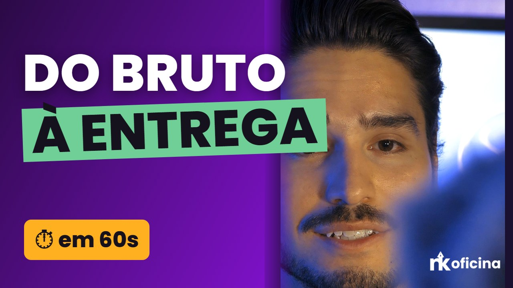
Muita gente acha que precisa de câmera profissional para fazer um vídeo bonito. A oficina mostrou o contrário: com um celular, luz natural e aplicativos gratuitos já dá para criar conteúdo de qualidade.
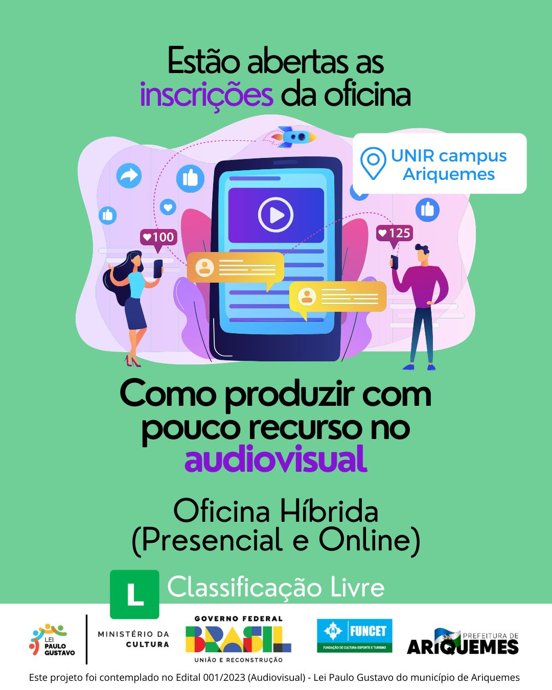
A oficina aconteceu em 12 de julho de 2024 no Espaço de Pesquisa e Extensão AMAAR, na UNIR Campus Ariquemes. Os participantes gravaram com o próprio celular, praticaram enquadramento e iluminação, aprenderam a editar os vídeos e saíram com certificado de conclusão.
Ilustração animada: na oficina, cada participante assumiu uma função, como numa equipe de produção de verdade.
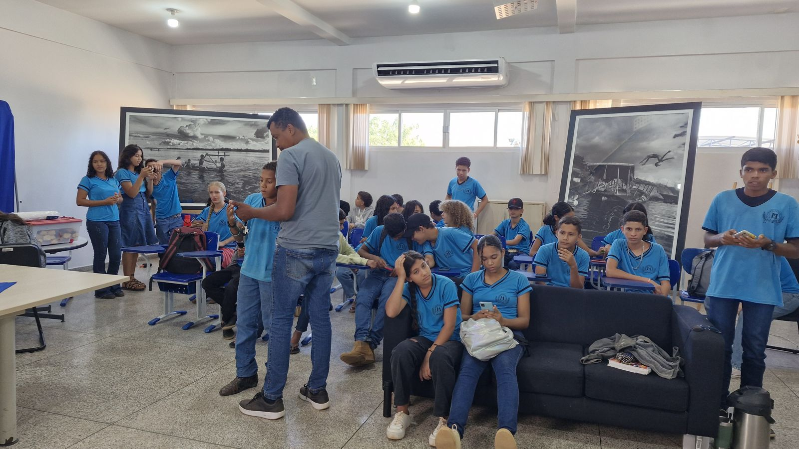
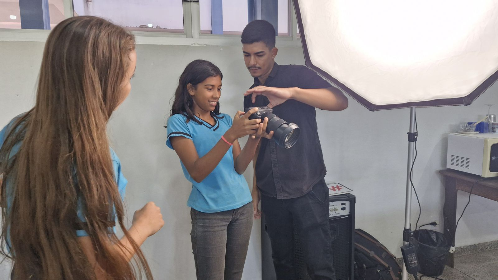
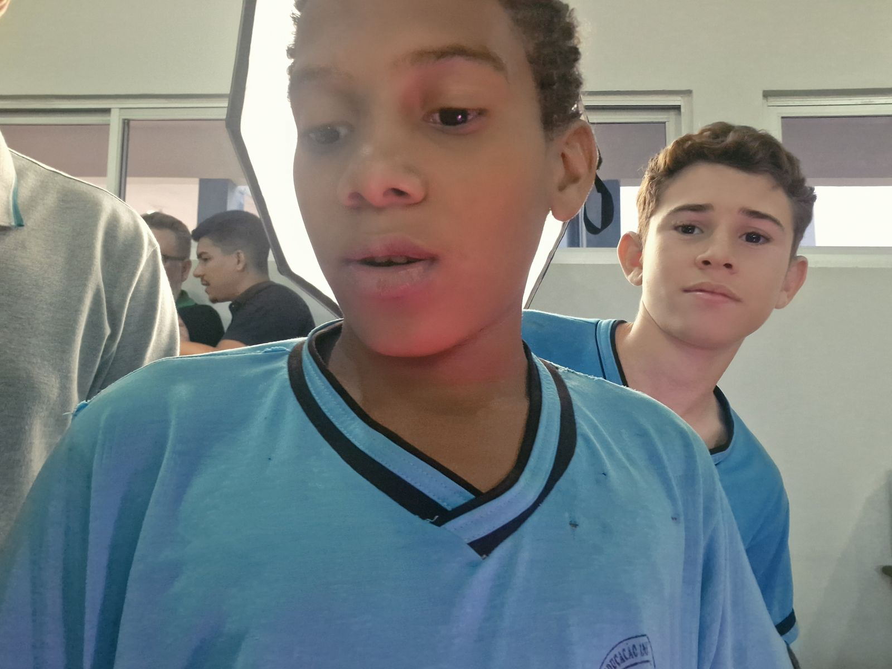
Projeto contemplado no Edital 001/2023 (Audiovisual) da Lei Paulo Gustavo, com apoio do Governo Federal, do Ministério da Cultura, da FUNCET e da Prefeitura de Ariquemes.
Um resumo das principais orientações para quem quer começar a produzir vídeos e usar as redes sociais de um jeito profissional.
Grave de frente para uma janela ou ao ar livre, de preferência de manhã ou no fim da tarde. A luz certa melhora o vídeo mais do que qualquer câmera.
Som ruim faz o público desistir do vídeo. Grave em lugar silencioso, fique perto do celular ou use um microfone de lapela simples.
Use tripé, apoie o celular em livros ou segure com as duas mãos junto ao corpo. Limpe a lente antes de gravar.
Ative a grade da câmera e use a regra dos terços. Grave na vertical (9:16) para Reels, Shorts e Stories, e na horizontal para vídeos longos.
Escreva um roteiro curto: o que você vai mostrar, em que ordem e qual mensagem final. Isso economiza tempo na gravação e na edição.
Corte as pausas, adicione legendas e música e ajuste as cores. Dá para fazer tudo no celular.
Foto clara, nome fácil de buscar e uma bio que diga o que você faz e para quem. Coloque um link de contato ou WhatsApp.
Comece o Reels com uma pergunta, um resultado ou uma imagem forte. Se o início não chamar atenção, a pessoa passa para o próximo.
Muita gente assiste sem som. Coloque legendas e textos curtos na tela para a mensagem chegar mesmo no mudo.
Postar com frequência vale mais do que postar muito de uma vez só. Monte um calendário simples e siga.
Use hashtags do seu nicho e da sua cidade e marque a localização. Isso ajuda clientes da região a encontrarem você.
Ofereça seus serviços, faça parcerias com comércios locais e mostre bastidores e resultados. O conteúdo funciona como seu portfólio.
Canais com um assunto bem definido crescem mais rápido. Pense em quem você quer alcançar e no que essa pessoa procura.
A capa e o título decidem o clique. Use rosto, pouco texto e cores fortes, e escreva títulos claros com palavras que as pessoas pesquisam.
Vá direto ao ponto, corte as partes paradas e dê um motivo para assistir até o fim. Quanto mais tempo assistido, mais o YouTube recomenda.
Vídeos verticais de até 60 segundos ajudam a conseguir inscritos rápido e levam público para os vídeos longos.
Escreva uma descrição com as palavras-chave do vídeo e links das suas redes. Isso ajuda o vídeo a aparecer nas buscas.
Com o Programa de Parcerias do YouTube o canal passa a ganhar com anúncios, assinaturas e Super Thanks. Até lá, dá para ganhar com parcerias e indicações.
As artes de divulgação, os vídeos de chamada e a identidade visual foram criados por Nathan Kennedy.
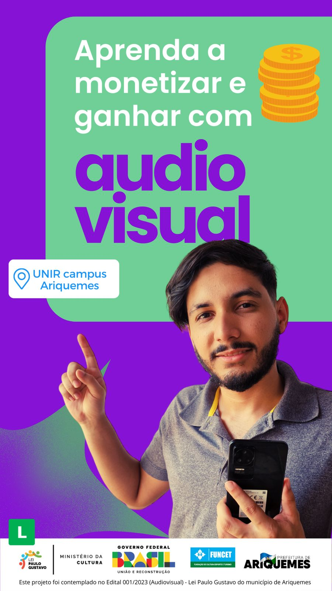
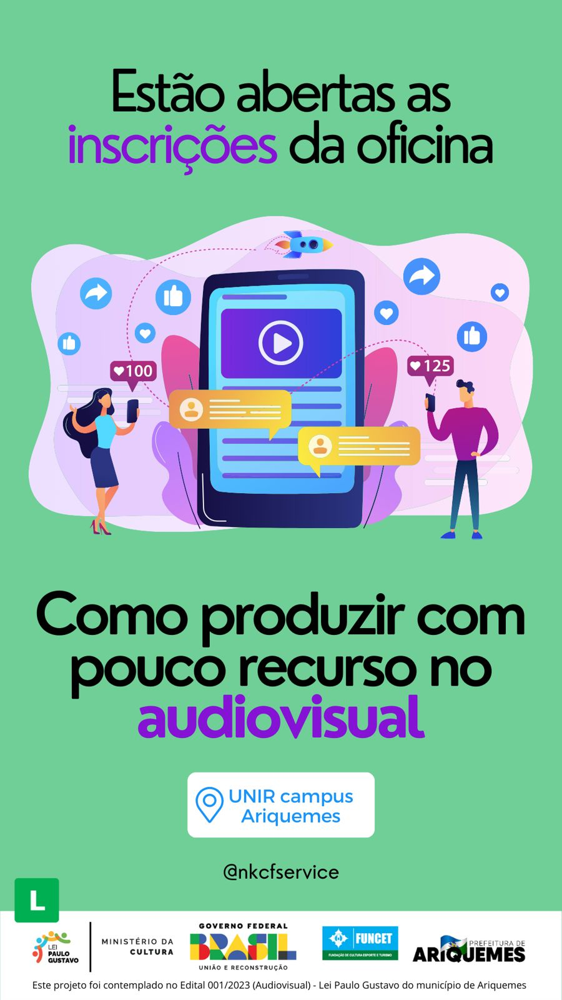
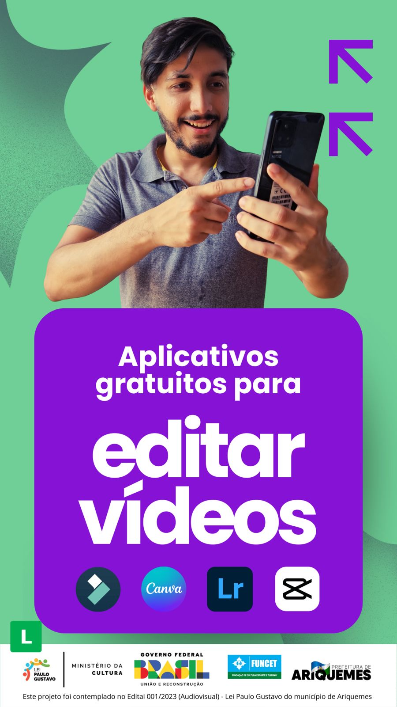
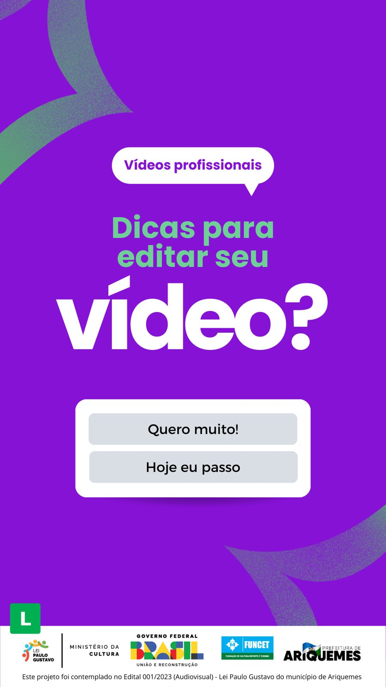
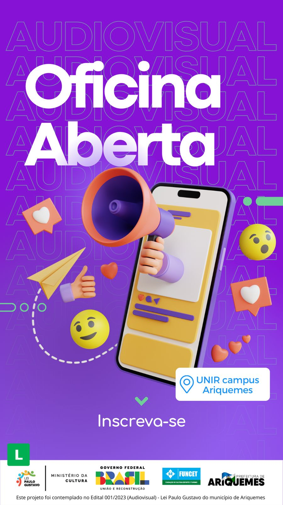
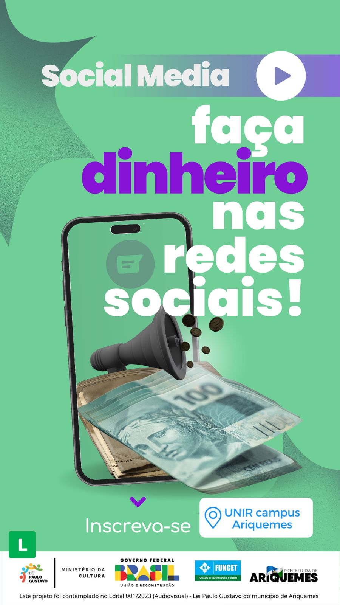
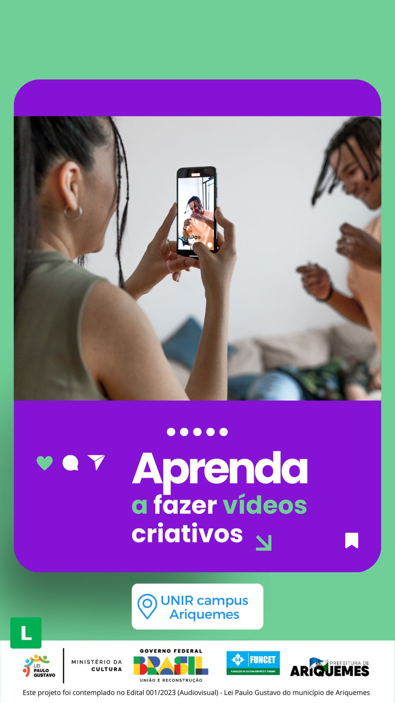
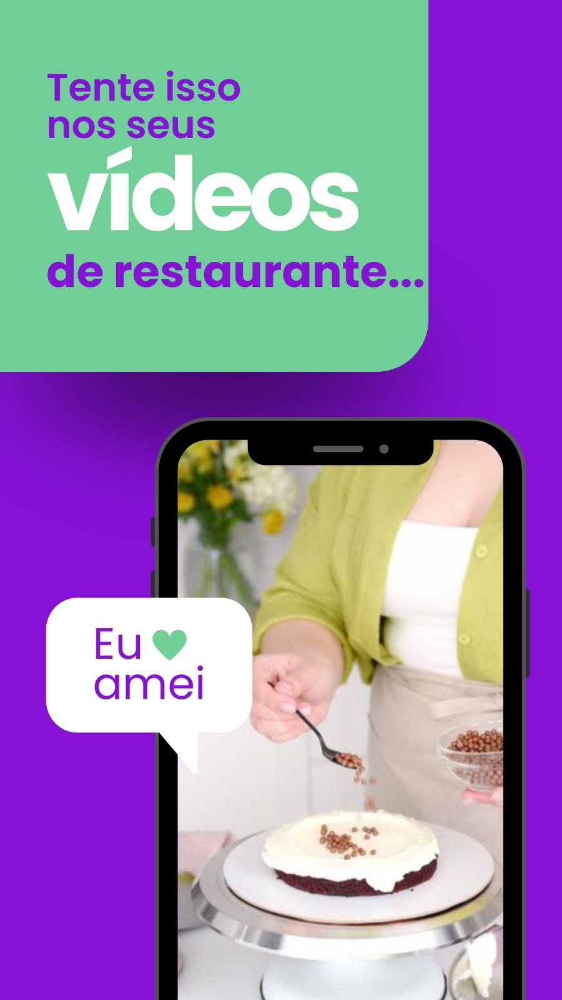
Designer e editor de vídeo de Ariquemes-RO. Trabalha com audiovisual desde 2020, fazendo casamentos, aniversários e conteúdo para comércios, clínicas e empresas do agro, boa parte junto à Fábrica Produções. Criou a identidade visual da oficina, preparou o conteúdo e conduziu as aulas. Também é programador: desenvolveu este site, o guia gratuito e o vídeo do especial.
Fotógrafo e filmmaker, participou do projeto da oficina. Trabalha com filmagem e edição desde 2020, com passagens por produtoras e agências de marketing, cobertura de casamentos, aniversários e eventos, e trabalhos para marcas da região.